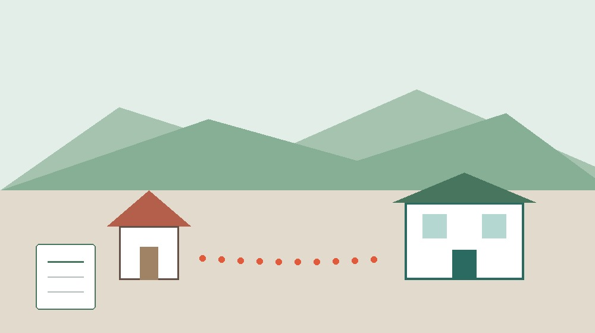
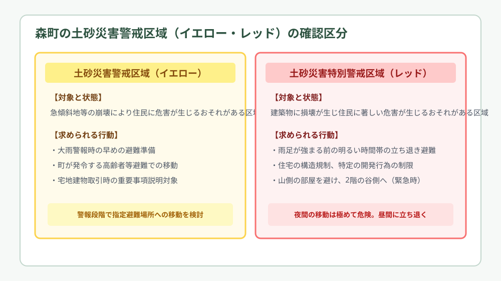
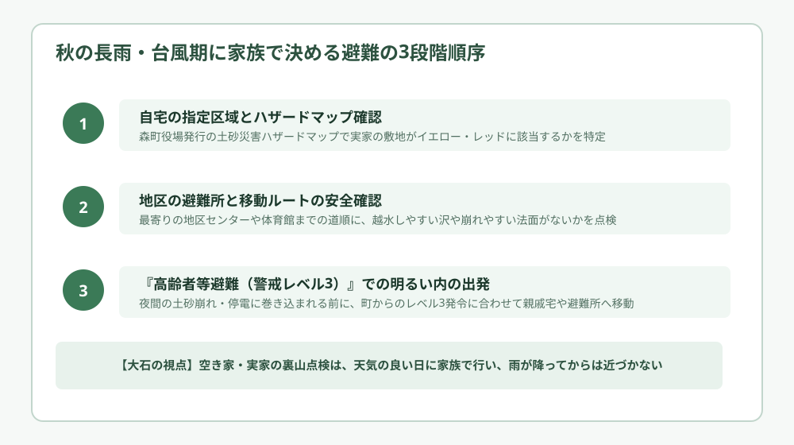

森町の土砂災害警戒区域｜秋の雨期に家族で確認する避難先
／ 地区めぐり・防災

Q. 森町の実家が山の近くにあります。大雨のとき、避難場所はどう選べばいい？
森町役場の土砂災害ハザードマップで、自宅がイエロー区域・レッド区域に入っているかを事前に特定します。秋の雨期は、警戒レベル3（高齢者等避難）が出た明るい時間帯に、指定避難所（地区センター等）または安全な親戚宅へ移動を完了させます。夜間の移動は沢の増水で危険なため、雨が降る前の晴天日に家族で経路を確認します。
山と川に囲まれた森町で、雨の季節に向き合う
静岡県周智郡森町は、清流・太田川の豊かな水と、緑深い遠州の山並みに抱かれた美しい町です。太田川とその支流が織りなす渓谷美や、手入れの行き届いた茶畑の段々畑は、この町を訪れる人々を温かく迎えてくれます。しかし、急峻な山林と無数の小さな沢が集落に近接している地形は、ひとたび秋雨前線や台風による大雨に見舞われると、土砂災害や河川氾濫の危険と隣り合わせであることも意味しています。
2026年9月中旬を迎え、秋彼岸の帰省や秋雨前線の南下が重なるこの時期、町外に暮らす家族にとっても、森町の実家や高齢の親御さんの安全は心から気にかかる問題です。「長年この家に住んでいて一度も裏山が崩れたことがないから大丈夫」「昔からの石垣があるから平気だ」という経験則だけでは、近年の激甚化する局地的な集中豪雨や線状降水帯には太刀打ちできません。
私は大石浩之（磐田市／不動産業）です。森町の土地や空き家、実家の維持管理の相談を受ける立場から、地域の豊かな自然を誇りに思うと同時に、自然がもたらす災害リスクに対しても、現実的で誠実な備えを怠ってはならないと強く感じています。自然の恵みと地形のリスクは表裏一体です。
前回の記事農作業の一人作業対策と家族の連絡では田畑での熱中症予防や声かけ手順を整理しましたが、今回は生活の根本である住宅と土地を取り巻く土砂災害警戒区域について、森町の地域特性に合わせて確認します。
本記事の目的は、不安をむやみに煽ることではありません。行政が公表している正確なデータを手元に置き、家族で落ち着いて話し合える具体的な判断材料をそろえることにあります。避難が必要になったとき、どこへどの道を通って動くべきかをあらかじめ決めておくことが、命を守る最大の防波堤になります。
事実整理｜土砂災害警戒区域（イエロー）と特別警戒区域（レッド）
土砂災害防止法（土砂災害警戒区域等における土砂災害防止対策の推進に関する法律）に基づき、静岡県および森町が調査・指定している区域には、大きく分けて「イエロー区域」と「レッド区域」の2種類が存在します。この2つの指定基準と法的効果の違いを正しく把握しておくことが、適切な避難判断を下すための第一歩となります。
一つ目の「土砂災害警戒区域（通称：イエロー区域）」は、急傾斜地の崩壊（がけ崩れ）や土石流、地すべりが発生した場合に、住民の生命や身体に危害が生じるおそれがあると認められる区域です。森町内の山裾に広がる多くの住宅地、農地、道路がこの指定を受けています。イエロー区域に指定されると、町による警戒避難体制の整備が進められ、大雨警報発令時などにおける住民の早めの避難準備が求められます。
二つ目の「土砂災害特別警戒区域（通称：レッド区域）」は、イエロー区域の中でもさらに危険度が高く、土石流の衝撃やがけ崩れの土砂移動によって建築物に損壊が生じ、住民の生命や身体に著しい危害が生じるおそれがある区域です。レッド区域内では、都市計画や建築基準法に基づく規制が厳格化され、住宅を新築・増改築する際の構造規制（鉄筋コンクリート造の耐衝撃壁の設置など）や、特定開発行為に対する許可制が適用されます。
森町役場総務課が公開している『森町土砂災害ハザードマップ』では、三倉、天方、一宮、森、園田、飯田の町内六つの地区について、どの斜面や沢沿いがイエローやレッドに該当するかが、非常に鮮明な航空写真や地図の上に色分けされて示されています。2026年9月18日現在、町の公式ウェブサイトからもPDF形式で地区別の最新マップを誰でも無償で確認することができます。
宅地建物取引業の実務においても、これら2種類の区域内に物件が所在しているかどうかは、売買や賃貸借契約を締結する際の重要事項説明における法定必須項目です。土砂災害警戒区域の指定状況は、単なる防災上の目安にとどまらず、土地の資産価値や将来的な利用計画、建物の維持管理責任に直結する公的な確定情報なのです。

森町の地形と山間集落が抱える避難の特性
森町の地理的な特徴を深く見ていくと、平野部が広がる磐田市や袋井市とは大きく異なる、山間部特有の避難上の課題が浮かび上がってきます。特に北部や東部に位置する三倉地区や天方地区などの山あいの集落では、集落と主要幹線道路を結ぶ生活道路が、川や山裾に沿った細い一本道であるケースが非常に多いのです。
このような地形条件では、大雨によってひとたび斜面の崩落や倒木が発生すると、避難所へ向かうための唯一の移動ルートが完全に寸断され、集落全体が一時的に孤立状態に陥ってしまうリスクを常に孕んでいます。また、山林から道路を横切って太田川の本流や支流へと流れ込む小さな沢や側溝は、わずか数時間の集中豪雨でも流木や土砂で詰まり、道路上へ濁流が溢れ出す危険性を持っています。
都市部の平坦な住宅地であれば、「道路が少し冠水し始めてから車で避難所へ移動する」という判断がぎりぎり成立することもありますが、森町の山間部において、視界の悪い夜間や暴風雨の最中に車を運転することは極めて危険です。道路の路肩が崩れて転落したり、増水した沢に車ごと押し流されたりする重大事故の引き金になりかねません。
したがって、森町における避難行動の根本原則は、「道路が安全に通れる明るい昼間の時間帯に、先に危険エリアの外へ立ち退いておくこと」に尽きます。雨がピークを迎えてから慌てて動くのではなく、降り始めの段階から気象レーダーや河川水位の推移を監視し、移動のタイミングを前倒しにする姿勢が何よりも重要になります。
家族が町外に暮らしている場合、「現地でどれくらい雨が降っているか」を肌感覚で知ることは困難です。だからこそ、遠隔地にいても気象庁のキキクル（大雨・洪水・土砂災害警報の危険度分布）をスマートフォンで小まめに確認し、現地の親御さんへ早めに電話を入れる段取りを共有しておく必要があります。
良い点｜地区センターの拠点機能と防災情報の多層化
森町の防災への取り組みにおいて、私が市民・事業者の目線から高く評価している素晴らしい点は、六つの地区ごとに整備された「地区センター」が、身近で確実な一次避難拠点として盤石に機能していることです。
広大な町域を持つ森町において、もし避難所が森地区の中心部にある町役場周辺や総合体育館だけに限定されていたら、三倉や天方、一宮の奥地に住む高齢者が車で何十分もかけて移動することは現実的に不可能です。しかし森町では、各地区の生活拠点である地区センターが指定避難所として位置付けられており、住み慣れた地域の中で避難先を確保できる仕組みが整えられています。
また、森町では防災情報の伝達手段が極めて多層的に構築されている点も見逃せません。山間部で雨音が激しくなると屋外の同報無線スピーカーの音声は聞き取りにくくなりますが、町内では各世帯に防災行政無線の戸別受信機が広く普及しています。室内であっても、緊急の避難情報や土砂災害警戒情報を音声で明瞭に聞き取ることができます。
さらに近年では、森町公式LINEアカウントによるタイムリーなプッシュ通知、静岡県が提供する防災アプリ、緊急速報メール（エリアメール）など、デジタルの伝達網も強力に整備されています。町外に住む子ども世代であっても、実家のある地区の避難指示を瞬時にスマートフォンで把握できるようになっています。
そして何より、各自治会や地区組織における自主防災隊の結びつきが非常に強く、日頃から高齢者世帯の見守りや声かけ訓練が熱心に行われていることは、森町が誇るべき最大の地域力です。行政の公助だけに依存せず、隣近所で助け合う共助の土壌が、山あいの暮らしの安全をしっかりと支えています。
注文したい点｜現地看板の視認性と夜間判断の難しさ
一方で、外から土地や住まいの安全を見つめる専門家として、あえて改善を求めたい注文のポイントも存在します。それは、実際の生活道路や現地の山道において、「どこからが危険な警戒区域なのか」を示す視覚的な目印や看板が、日常の風景の中に溶け込みすぎていて、外から訪れる家族には気づきにくい点です。
ハザードマップの印刷物やスマートフォンの画面を見れば、赤や黄色で鮮やかに塗られた危険エリアを明瞭に判別できます。しかし、いざ現地の土地に立ってみると、うっそうと茂る雑木林や竹林に覆われ、どこまでが安全でどこからが急傾斜地崩壊危険箇所なのかを、肉眼で直感的に把握することは困難です。特に、年に数回しか帰省しない遠方の子ども世代にとっては、実家の裏山がどれほどの崩壊リスクを秘めているのかを実感しにくいのが実情です。
また、町の避難指示が夜間や夕暮れ時に発令された場合の行動基準についても、さらなる丁寧な周知と啓蒙が必要であると感じています。激しい暴風雨が吹き荒れる真夜中に、高齢の親が懐中電灯を片手に屋外へ出て避難所を目指すことは、かえって落石や側溝への転落事故に巻き込まれる確率を高めてしまいます。
その際、どうしても安全な避難所への移動が間に合わない場合の緊急措置として、「自宅の2階にある、山側の斜面から最も離れた部屋へ移動して就寝する（垂直避難）」という命を守る最低限の知恵が、どれほど正確に地域住民へ共有されているかには依然として課題が残ります。
私の注文は、すべての山林の入り口に莫大な費用をかけて大型の警戒看板を設置してほしいということではありません。地区ごとの公会堂や集落のゴミ集積所、バス停など、住民が日常的に必ず足を止める生活拠点に、その地区固有の土砂災害リスクと避難時の注意点を分かりやすくまとめた案内板を掲示するなど、草の根の工夫をさらに推し進めてほしいという願いです。

対案・結論｜秋の晴天日に実家の裏山を一緒に歩く
では、森町に実家を持つご家族や、親御さんの一人暮らしを気遣う子ども世代は、この秋の雨期に具体的にどのような行動を起こすべきでしょうか。私が提案する最も実効性の高い対案は極めて具体的です。「雨がまったく降っていない秋の穏やかな晴天日に、家族で実家の敷地外周と裏山の法面を実際に歩いて点検すること」です。
大雨が降り始めてから裏山を見に行くことは、命を捨てるに等しい自殺行為ですから絶対に厳禁です。何事も起きていない安全な日に、以下の5つの兆候が出ていないかを、ご自身の目で丁寧に確かめてみてください。
- 実家の裏山や人工的な斜面・擁壁に、以前はなかった細かな亀裂、段差、土のめくれが生じていないか。
- 斜面に自生している立木や竹が、谷側へ不自然に傾いていたり、根元の土が浮き上がったりしていないか。
- 山からの雨水を安全に集落の外へ流すためのU字溝や排水枡に、落ち葉、倒木、小石が詰まって水の通り道を塞いでいないか。
- 山肌から湧き出している普段の清水が、急に赤茶色に濁ったり、異様な土臭い匂いが漂ったりしていないか。
- 実家の玄関を出てから最寄りの地区センターへ至る道路の途中に、崩れそうな未補強のがけ地や、大雨で冠水しやすい低い沢筋がないか。
もし点検の過程で、法面に明らかなクラック（ひび割れ）が見つかったり、コンクリート擁壁が前方にせり出して膨らんでいたりする変状を発見した場合は、個人で勝手に土砂を掘削したり応急処置を施そうとしたりしてはいけません。直ちに森町役場建設課や土地の管理者に連絡し、専門の技術者による現地調査と対策を相談してください。自然の土圧や地下水圧は、個人のDIYで太刀打ちできる規模をはるかに超えています。
そして実際の避難行動における最大の鉄則は、「警戒レベル3（高齢者等避難）」が町から発令された段階で、外がまだ明るいうちに速やかに立ち退き避難を開始することです。「まだ雨の降り方がそれほど強くないから」「長年暮らしてきて一度も危険を感じたことがないから」と避難を先延ばしにすることは最も危険です。高齢の方や足腰の弱いご家族がいる世帯こそ、周囲が明るく道路状況を肉眼で確認できる日中のうちに、避難所や町外の安全な親戚宅へ移動を完了させることが不可欠です。
移動の際は、通帳や保険証、常備薬、お薬手帳、数日分の着替えなどをひとまとめにした非常持ち出し袋を必ず携行します。避難所で過ごすことが体力的に難しい親御さんの場合は、大雨の予報が出ている週末だけ、磐田市や袋井市などの安全な場所にある子ども世代の自宅へあらかじめ招いて宿泊してもらう「縁故避難（ホテル・親戚宅への事前避難）」を積極的に選択肢へ入れることを強くお勧めします。
空き家の所有者が負うべき管理責任と予防対策
現在森町の実家が空き家になっており、所有者ご自身は町外や県外の都市部で暮らしているという方にとっても、土砂災害の危険は決して他人事ではありません。不動産の所有者には、敷地内の工作物や樹木を適切に維持管理し、周辺に危害を及ぼさないようにする法的な管理責任が厳格に課されています。
民法第717条（土地の工作物等の占有者及び所有者の責任）の規定により、空き家の敷地内にある擁壁が崩壊したり、裏山の庭木が倒木となって隣家を押し潰したり町道を塞いだりした場合、所有者に過失がなかったとしても、被害者に対して多額の損害賠償責任を負わなければならない無過失責任が生じる可能性があります。
特に森町のような緑豊かな地域では、管理されていない空き家の庭木や裏山の杉・ヒノキが巨大化し、大雨や強風によって根元から倒れ、近隣の電線を切断して集落全体の停電を引き起こす事故が実際に発生しています。台風シーズンを前に、敷地境界付近の危険な立木を事前に点検し、地域の森林組合や専門の伐採業者へ依頼して計画的な間伐や枝打ちを済ませておくことは、所有者としての重大な義務であり、将来の訴訟リスクから我が身を守る賢明な予防策でもあります。
森町における森林整備や一定規模以上の立木伐採の手続きについては、前回の記事森町の伐採届の確認手順でも詳細に解説しました。土地を相続した以上、その土地が持つリスクも含めて責任を引き受ける。地域に迷惑をかけない誠実な管理の姿勢を持つことが、遠州森町の美しい景観と共同体の信頼を守り続けるための第一歩となります。
大石の視点｜土地の価値は、災害時の安全性で決まる
私は磐田市を拠点に不動産実務に携わっている者として、不動産の適正な資産価値を査定する際、建物の豪華さや延床面積の広さ以上に、「その土地が自然災害に対してどれほど強固で安全であるか」を最重要視しています。
どれほど歴史のある堂々とした古民家であっても、背後に崩壊の危険性が極めて高い急傾斜地を抱え、土砂災害特別警戒区域（レッド区域）にすっぽりと指定されている立地であれば、将来的にその物件を買い取りたい、あるいは借りたいという希望者を見つけることは非常に困難です。住宅ローンを提供する金融機関の融資姿勢も、レッド区域内の物件に対しては著しく厳格になります。一方で、同じ山あいの集落であっても、谷筋の直下を外れた安定した平坦地であり、土砂災害のハザードマップからきれいに外れている場所であれば、自然豊かな環境でのテレワーク拠点や工房、古民家カフェなどを希望する若い移住者にとって、かけがえのない魅力的な不動産になり得ます。
ハザードマップを開いて危険区域を確認することは、決して「自分の実家にはもう資産価値がない」と落胆したり悲観したりするための作業ではありません。今ある客観的なリスクを冷徹に直視した上で、「この斜面には水抜きの修繕が必要だ」「山に面した北側の部屋は寝室にせず、昼間だけ使う納戸にしよう」「大雨警報が出たら無理をせず、早めに磐田の息子の家へ行こう」という、具体的で現実的な暮らしの知恵へと昇華させるための道具なのです。
危険な事実から目を背けたり、「見なかったこと」にしてやり過ごそうとする姿勢こそが、最悪の悲劇を招きます。行政が膨大な予算と調査を投じて公表してくれている科学的なハザードデータを信頼し、家族全員でテーブルを囲んで共有する。そうした地に足のついた冷静な対話こそが、大切な実家と家族の未来を真の意味で守り抜く唯一の道であると、私は確信しています。
まとめ｜2026年9月18日、まずハザードマップを開く
森町の土砂災害警戒区域は、町と静岡県が地域の安全を守るために引いた、極めて重要で切実な命の境界線です。2026年9月18日、秋彼岸の連休を控えた今この瞬間に、ぜひご家族でパソコンやスマートフォンから森町の公式ハザードマップを開いてみてください。
自分たちの実家がイエロー区域やレッド区域に入っていないか。万が一の豪雨のとき、最寄りの地区センターまでどの道を歩いて逃げるのか。そして大雨警戒情報が発表された際、誰が誰に電話をかけて避難の背中を押すのか。その確認を今日行うことが、未来の不測の災害からかけがえのない命を守る確固たる力になります。
森町役場が発信する最新の防災気象情報を小まめにチェックし、少しでも危険を感じたら、躊躇することなく明るい内に安全な場所へ避難してください。家族の命と安全を第一に確かめ合いながら、森町の穏やかで美しい実りの秋を迎えましょう。
よくある質問
森町の実家が土砂災害警戒区域に入っているかはどこで分かりますか？
森町役場総務課が公表している『森町土砂災害ハザードマップ』や静岡県土砂災害情報システム（GIS）で、大字・地番ごとに確認できます。黄色で塗られた警戒区域（イエロー）と、赤色の特別警戒区域（レッド）があり、建築規制や避難勧告の目安が異なります。
高齢者等避難（レベル3）が出たら、どこへ逃げればよいですか？
町が開設する指定一般避難所（各地区センターや小中学校体育館）へ移動するか、浸水や土砂崩れの危険がない安全な親戚・知人宅へ避難します。暗くなってからの避難は道中の沢の増水や倒木で命に係わるため、明るい日中のうちに移動を完了させることが不可欠です。
空き家になっている森町の実家の裏山が心配なときはどうすればよいですか？
晴天時に家族で現地の法面を確認し、亀裂、湧き水のにごり、立ち木の傾きがないかを点検します。雨が降り始めてから現地を見に行くのは絶対に避けてください。危険な変状を見つけた場合は、勝手に斜面に手を付けず、森町役場建設課や土地の管理者に相談します。

参考にした公式情報
- 森町「森町土砂災害ハザードマップ」総務課危機管理係（2026年9月18日確認）
- 森町「指定緊急避難場所及び指定避難所一覧」総務課危機管理係（2026年9月18日確認）
最終確認日：2026-09-18。計画・制度・開催状況は変更される場合があります。最新情報は公式窓口へ、個別の法律・登記・保存上の判断は担当機関や専門家へ確認してください。